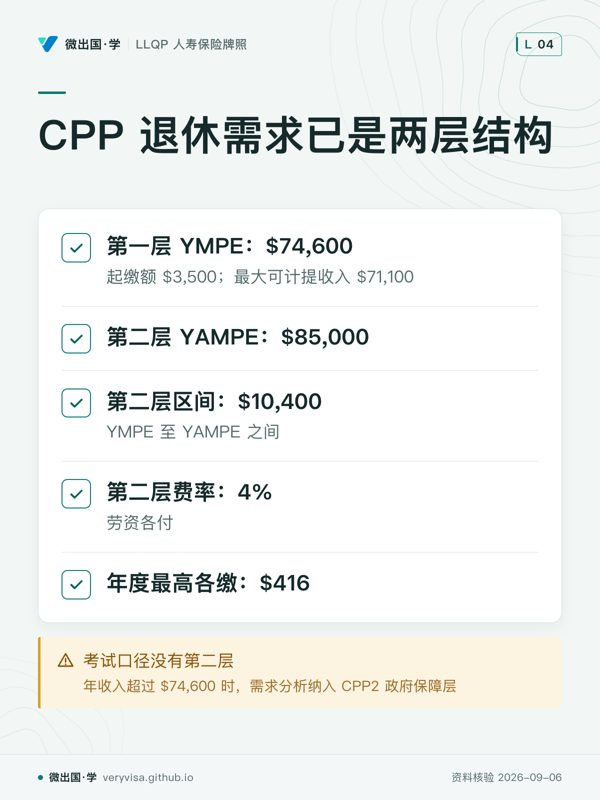

核实日期：2026-09-06｜考纲位置：Seg c1（评估客户处境、投资目标与投资者画像，占本模块 35% 权重，是四个能力组件里权重最高的一个）。 复核周期：本页含多个联邦年度数字（TFSA/RRSP/FHSA/CPP2），年度数字在下一年度复核（下次 2027-01-31）；数字来源见文末术语表与各表格标注的来源编号。
这一章是分离基金与年金整个模块的地基，也是分数占比最高的一块——它不讲任何一种具体产品，而是讲"钱在时间里怎么变大、账户和投资标的是两回事、以及一大堆看起来眼熟其实分工完全不同的缩写（CDIC、CIPF、Assuris、CIRO）各自保护什么"。考试口径用一整章把十几种投资工具逐一介绍了一遍，但那些工具的细节（分离基金保证、年金分类、股票债券机制）本课后续章节会各自专门展开，这里不重复。读完这一章，你要能做三件事：算对复利与货币时间价值的基本题；说清楚一张注册账户家族对照表——包括考试口径整章都没提到、但 2023 年就已经存在的 FHSA；以及分清哪些数字考试口径写的还是 2022 年的假设值，2026 年的真实客户会用哪个数。这三件事分别对应考场的计算题、辨析题，和柜台工作里最容易被问倒的现行数字。
ℹ️
这一章不单独考"分离基金是什么"
考试口径把分离基金与年金也放进了本章的"投资工具类型"清单里，但这两种产品的保证机制、合同结构、监管归属，本课已经用两篇独立讲解页专门展开，这里只在"投资工具四维表"里给它们一个坐标，不重复展开。本章真正的重点是它们共同的地基：时间价值、账户机制、风险分类、投资者保护体系。
一、制度设计与底层逻辑：为什么"账户"和"投资"是两回事
本节回答This section answers 区分税务外壳与底层投资，算扣除通胀后的实际回报与超额罚则Distinguish between tax shelters and underlying investments, calculating inflation-adjusted real returns and over-contribution penalties. 本章考题 1Question 1
考试口径在讲注册账户（registered account）时反复用一个比喻："账户只是一个购物袋（shopping bag）"。这个比喻背后是一套明确的立法设计：国家用税收优惠去引导特定的储蓄行为，账户本身只是一层"税务外壳"，真正决定回报高低的是袋子里装了什么——现金、GIC、股票、共同基金还是分离基金。RRSP 鼓励退休储蓄（供款抵税、增值递延），TFSA 鼓励一般性储蓄（供款不抵税但取出免税），RESP 鼓励教育储蓄（联邦补助 + 增值递延），RDSP 鼓励符合 DTC 条件的残障人士长期储蓄（补助依收入、年龄与资格核定），FHSA 鼓励首次购房储蓄（供款抵税 + 合规提取免税，两头优惠叠加）——每一种账户对应立法者想鼓励的一种社会行为，这不是巧合，是设计。
这套设计的"法律后果"体现在两处：一是税收优惠本身（抵税、递延、免税，三种机制互不相同，第二节的对照表会逐一拆开）；二是滥用或超额时的惩罚性条款——《所得税法》(Income Tax Act, ITA) 对多数注册账户的超额供款设有按月计算的惩罚税（通常为超额部分每月 1%），这条规则的存在本身就说明：账户额度不是"建议上限"，是有法律强制力的天花板，代理人向客户核对供款空间是一项有真实法律后果的工作，不是可有可无的提醒。
时间价值（time value of money）是这一整套账户设计能够成立的数学基础——如果钱放久了不会变多，"延税""免税"这些优惠就没有意义。复利（compounding）是这个数学基础里最核心的机制：本金产生的利息滚入本金一起再生息，"利息生利息"，考试口径称它是投资里"最强大的工具"，且这句话有一个不那么讨喜的反面——债务也会以同样的方式复利滚大，信用卡欠款不还，利息一样在生利息。复利效应随时间拉长而加速放大，这正是"越早开始投资越占便宜"这句理财常识背后真正的数学原因，而不只是一句鸡汤。
理解复利之后，还要分清名义回报（nominal return）与实际回报（real return）——名义回报是账户对账单或产品广告上印的那个百分比，实际回报 = (1＋名义回报)/(1＋通胀率) − 1；数值较小时可用名义回报减通胀率近似，反映的是"这笔钱明年能买到多少东西"这个更真实的问题。这个区别不是学术游戏：名义回报即使为正，但当通胀率高于名义回报时，实际回报是负的——账户余额在涨，购买力却在跌，这正是很多客户"钱变多了却感觉更穷了"的真实数学原因。
⚠️
"回报率高"不等于"客户更有钱了"
一份年化名义回报 4% 的保守型基金，遇上 5% 的通胀年份，实际回报约为 −0.95%（4%−5%＝−1% 是近似）；同一年一份年化名义回报 9% 的股票型基金，实际回报约为 +3.81%（9%−5%＝+4% 是近似）。名义回报排序与实际回报排序可能完全一致，也可能因为通胀年份不同而错位——题目给两个只标"回报率"的选项时，要先确认问的是名义还是实际。
二、2026 现行政策与数字：算例、账户家族、以及考试口径没写的两个缺口
本节回答This section answers 掌握72法则、注册账户限额税则、三大保护机构及双口径Master the Rule of 72, registered account contribution and tax rules, three protection organizations, and dual benchmarks. 本章考题 2Question 2 本章考题 3Question 3
时间价值算例一：复利 vs 单利，差多少
设本金 $10,000，年化名义回报 6%，投资 20 年，不追加也不提取。
- 单利（不复利，只对本金计息）：$10,000 × (1 + 6% × 20) = $10,000 × 2.2 = $22,000。
- 复利（利息滚入本金再生息）：FV = PV × (1 + r)ⁿ = $10,000 × (1.06)²⁰ ≈ $10,000 × 3.207 ≈ $32,071。
同样的本金、同样的年利率、同样的年限，复利比单利多出 约 $10,071——这笔差额完全来自"利息生利息"，本金和名义利率都没有变化。这就是考试口径反复强调复利是"最强大工具"的数学证据：期限越长，复利与单利的差距越会以加速度扩大，而不是匀速扩大。
时间价值算例二：72 法则速算翻倍年限
72 法则（Rule of 72）是一个不需要计算器的估算捷径：用 72 除以年化回报率（用整数百分比代入），得到本金翻倍所需的大致年数。
- 年化 6%：72 ÷ 6 ≈ 12 年翻倍（精确复利计算约 11.9 年，误差极小）。
- 年化 8%：72 ÷ 8 = 9 年翻倍（精确复利计算约 9.0 年，几乎完全吻合）。
- 年化 3%（仅为假设，不是现行 GIC 报价）：72 ÷ 3 = 24 年翻倍。
72 法则回报的是估算值，不是精确解——它在年化回报 6%–10% 的区间内最准，回报率越极端（很低或很高），误差会略微放大。柜台场景里它的价值在于快速给客户一个数量级概念：比较假设年化 3%（约 24 年翻倍）与 6%–8%（约 9–12 年翻倍）之间的时间差异，比精确到小数点的公式更容易让客户当场理解为什么"时间跨度"是投资目标评估里必须先问清楚的第一个问题。
注册账户家族对照表：谁能开、供多少、税前还是税后
下表按"谁能开"「2026 年供款额」「税前/税后」「取出课税」「超额罚」五个维度对齐全部主要注册账户——FHSA 那一行标注"考试口径无，2023 起"，因为它不是编写疏漏，而是这个账户 2023-04-01 才正式上线，晚于考试口径 2022 年成文，考试口径在时间线上不可能收录它。
| 账户 | 谁能开 | 2026 年供款额 | 税前/税后 | 取出课税 | 超额罚 |
|---|---|---|---|---|---|
| RRSP（注册退休储蓄计划） | 有可用 RRSP 额度者；自有 RRSP 最迟在满 71 岁当年年底到期，开户还须满足机构要求 | 上年收入 18% 与年度 Dollar Limit（2026 = $33,810）取小者，未用额度可结转 | 供款税前可抵税 | 取出全额计入当年应税收入 | 一般对超过扣除限额加 $2,000 缓冲的金额每月征 1%；缓冲不增加可抵税额，年龄条件另核 |
| TFSA（免税储蓄账户） | 18 岁以上加拿大税务居民（需 SIN） | 2026 年度限额 $7,000（与 2024/2025 持平），若 2009 年已满 18 岁、此后每年均符合居民资格，历年年度限额合计 $109,000；个人剩余额度另扣供款、加合资格上年提款 | 供款税后（不可抵税） | 取出免税，且不影响 OAS/GIS 等收入相关福利 | 超额部分每月 1%；提取的额度要到次年 1 月 1 日才恢复，当年没有其他剩余额度时，取出后同年存回会构成超额 |
| FHSA（首次购房储蓄账户，考试口径无，2023 起） | 开户年满 18 岁且不超过 71 岁的加拿大居民，并满足首次购房定义；BC 订约年龄通常为 19 岁。开户前本年及前 4 个日历年，不得住在本人或现配偶／同居伴侣拥有的住房内作为主要居所 | 年度参与额度 $8,000，终身上限 $40,000；结转限单年最多再加 $8,000（即单年上限 $16,000） | 供款税前可抵税（像 RRSP） | 用于合规首次购房的提款免税（像 TFSA）；符合直接转移条件时可转 RRSP／RRIF，不占 RRSP 额度；超额金额不能当然免税转移 | 超额部分每月 1% |
| RESP（注册教育储蓄计划） | 合资格认购人为受益人开设；供款一般要求受益人有 SIN 且为加拿大居民，家庭计划另有亲属条件 | 无年度上限，终身供款上限 $50,000／受益人（CRA 现行页已核，CRA（论坛解读）） | 供款本身税后（不可抵税），但基本 CESG 为合资格供款前 $2,500 的 20%、通常每年 $500；有结转时基本补助可达 $1,000，额外 CESG 另核收入，终身合计 $7,200／受益人（ESDC 现行页已核，Government of Canada (ESDC)） | 提取时供款部分返还免税；累积收益与补助部分（EAP）计入学生当年收入课税，通常适用学生的低边际税率 | 未于月底撤出的超额供款，按各供款人份额每月征1%税（CRA（论坛解读）） |
| RDSP（注册残障储蓄计划） | 受益人须符合 DTC、居民、SIN 与年龄要求；一般新开须未满 60 岁，持有人资格依年龄及行为能力判断 | 无年度上限，终身供款上限 $200,000，可供至受益人满 59 岁当年年底（CRA RC4460 已核，canada.ca（论坛解读）） | 供款税后（不可抵税），联邦 CDSG/CDSB 补助按受益人家庭收入分级发放 | 提取（DAP/LDAP）时供款部分免税；补助与投资收益部分计入受益人当年收入课税 | 无按月罚金机制；额度是终身上限，超出部分账户不接受供款 |
| RRIF（注册退休收入基金，RRSP 到期选项之一） | 任何年龄均可依合资格资金设立；自有 RRSP 于满 71 岁当年年底前须提款、转 RRIF 或购买合资格年金 | 不接受新供款，由 RRSP、其他 RRIF 或法律允许的其他注册计划直接转入 | 转入维持税前递延地位 | 设立当年最低额为零，翌年起每年最低提取（按适用年龄与年初价值计算），提取部分全额计入当年应税收入 | 不适用（无供款环节） |
✕
TFSA 的"额度恢复"是次年，不是当年
客户今年从 TFSA 提取 $5,000，如果账户当年已经没有其他剩余额度，今年再存入这 $5,000 会构成超额供款，触发每月 1% 的惩罚税——提取出来的额度要等到次年 1 月 1 日才重新计入可用空间。这是柜台被问得最频繁、也是最容易被想当然答错的一条规则：TFSA 的"取出免税"不等于"取出即时可以无限次原地存回"。
考场与现行对照表一：TFSA / RRSP 额度——考试口径没写死数字，2026 现行是具体值
考试口径对 TFSA 与 RRSP 的讲法是"机制描述 + 举例假设数字"（比如举例用收入 $40,000 算出 RRSP 供款上限 $7,200），本身没有印一张写死的年度限额表——这一点对讲解页反而是好事：考试口径给的公式与结转规则是长青的，只有官方年度数字需要每年更新。
| 维度 | 考试口径 2022 说 | 2026 现行 | 考场答·柜台做 |
|---|---|---|---|
| TFSA 年度限额 | 未写死具体数字，仅用假设值举例 | $7,000（与 2024/2025 持平未上调） | 客户咨询一律用现行值；模拟题若明确标注年份线索，按线索年份的官方数字计算 |
| RRSP Dollar Limit | 未写死具体数字，仅用假设收入举例（如收入 $40,000×18%=$7,200） | $33,810（2025 年为 $32,490） | "18% 规则"公式本身长青不变，年度金额上限（Dollar Limit）会变。新增空间以先前一年 earned income 的 18% 与该上限取小，再考虑养老金调整及结转；题目按给定税年与条件计算，客户个人可用额度核对 NOA |
| RRSP 到期年龄 | 71 岁 | 满 71 岁当年年底前到期，可提款、转 RRIF 或购年金（CRA（论坛解读）） | 年龄相同不代表只能选 RRIF；考场按题目指定的转换方式答，柜台比较三条路径及其税务后果 |
考场与现行对照表二：投资业自律机构——MFDA/IIROC 已成历史名，现行统一是 CIRO
考试口径（9e 2022）在讲投资者保护与债券经纪牌照时三处提到 IIROC（Investment Industry Regulatory Organization of Canada，加拿大投资行业监管组织）与 MFDA（Mutual Fund Dealers Association，共同基金交易商协会），全书零处出现现行的机构名。
| 维度 | 考试口径 2022 说 | 2026 现行 | 考场答·柜台做 |
|---|---|---|---|
| 投资交易商（股票/债券经纪）监管机构 | IIROC | 已于 2023-01-01 合并运营，2023-04-24 定名，2023-06-01 品牌全面启用为 CIRO（Canadian Investment Regulatory Organization，加拿大投资监管组织） | 问现行机构答 CIRO；明确问考试口径历史机构时按题干年代答 IIROC |
| 共同基金交易商监管机构 | MFDA | 已并入 CIRO | 问现行机构答 CIRO；考试口径历史名称为 MFDA |
| 投资者保护基金 | 两个独立基金：CIPF（保护投资交易商客户）与 IPC（保护 MFDA 会员客户） | 合并为单一 CIPF；个人保护上限为一般账户合计 $1M ＋ 注册退休账户合计 $1M ＋ RESP 合计 $1M，三类分开计（CIPF 官网已核，CIPF） | "两个基金"的旧描述已过时，现答"单一 CIPF"；具体保障须按账户类别、会员资格与现行保障政策判断 |
✕
分离基金不归 CIRO 管
CIRO 只监管证券交易商与共同基金交易商这条线——股票、债券、共同基金、ETF 都在它的监管范围内。分离基金是保险产品，销售必须持省级人寿保险代理人牌照，归 Insurance Council of BC / BCFSA 这条完全独立的监管体系管，与 CIRO 没有关系。题目问"分离基金销售受哪个机构监管"，选 CIRO 是这一章最常见的错误答案之一——两条产品线外观相似（都是把钱投进一篮子资产），监管路径却完全不同，这一点在后续分离基金专章还会反复出现。
三种投资者保护体系：保护对象完全不同，不是同一份"存款保险"的三个马甲
- CDIC（Canada Deposit Insurance Corporation，加拿大存款保险公司）：保护 CDIC 会员银行及联邦信用合作社的合资格存款；省级信用社须核当地存款保险，例如 BC 的 CUDIC。CDIC 会员的存款类产品（储蓄账户、GIC）——考试口径给出的保护上限是每机构每类别 $100,000，2026-09 回 CDIC 官网确认仍为 $100,000 含本息、类别分开计（Canada Deposit Insurance Cor…）。
- CIPF（现已并入的单一投资者保护基金）：保护证券/共同基金交易商破产时客户账户里的证券资产（股票、债券、ETF、共同基金）。
- Assuris：保护人寿保险公司破产时的保单持有人权益（分离基金、年金、人寿保单），保障上限 2023-05-29 起全面上调，考试口径给的仍是旧值，这部分留给分离基金专章的考场与现行对照表详细展开，这里不重复。
三者的共同点，也是最容易被误解的一点：它们只保"交易对手破产"这一种风险，不保市场下跌造成的投资损失——GIC 遇上发行机构破产，CDIC 兜底；股票基金因市场下跌亏损 20%，CIPF 与 Assuris 都不会补偿这部分市值损失。
CPP 增强二阶段（CPP2/YAMPE）：考试口径完全没有，2026 已定型的两层结构
考试口径只讲了第一层 CPP（YMPE，Year's Maximum Pensionable Earnings，年度最高可计养老金收入的概念，以及 2022 年的起缴额 $3,500），全书未提第二层——因为 CPP 增强二阶段方案是 2024–2025 年才逐步落地，晚于考试口径成文。2026 现行两层结构：
- 第一层：YMPE = $74,600，起缴额 $3,500（长青未变），最大可计提收入 $71,100。
- 第二层（CPP2）：YAMPE（Year's Additional Maximum Pensionable Earnings）= $85,000；YMPE 与 YAMPE 之间的 $10,400 收入区间，按 4% 费率计提（劳资各付），双方年度最高各缴 $416。
这不是一个可以跳过的历史花絮：年收入超过 $74,600 的客户，退休收入需求分析现在必须把 CPP2 这一层纳入政府保障层的计算，否则会系统性低估这类客户的政府退休收入来源，进而在推荐分离基金或年金的缺口计算里算出偏高的"需要额外购买多少"。这一点属于考纲"评估客户处境"（c1，35% 权重）板块的实质性缺口，考试口径公式只覆盖到第一层。
三种投资收益的课税方式，以及一段"差点改变"的政策史
非注册持有的利息通常全额计入收入；合资格加拿大公司股息须区分 eligible／non-eligible 的 gross-up 与税收抵免，外国股息不能套用同一抵免。资本利得现行 inclusion rate 为 50%，但三类收益的实际税负取决于省份、收入和抵免，不能排成永远固定的高低顺序。净资本损失通常只抵应税资本利得，可向前追溯 3 年或向后无限期结转；注册账户内损失不能当然按非注册规则抵税。
这个 50% 的比例，2024–2025 年经历过一段真实的政策摇摆，值得讲清楚而不是简单说"一直是 50%"：2024-06 联邦预算案曾提案把个人资本利得 inclusion rate 从 1/2 提高到 2/3（超 $250,000 部分适用），但立法程序未完成，遭遇政治阻力，2025-03 政府正式宣布不再推进该提案——现行 inclusion rate 仍是 50%，与考试口径 2022 版数字巧合一致。这是本课少见的"考试口径反而仍然现行"的例子，但前提是要把这段 2024–2025 的摇摆讲清楚，不能让读者误以为这个数字从来没有过争议——如果客户在 2024 年下半年看过相关新闻，柜台答不出这段来龙去脉会显得很外行。
六类投资风险：评估客户处境的第一把尺子
考试口径列举的投资风险类别不止六种（还包括经济整体风险、行业风险等兜底类别），但下面六类是柜台与考场最常单独考察、彼此边界也最容易混淆的核心分类：
- 通胀风险（inflation risk / purchasing power risk）：回报追不上物价上涨速度，实际回报为负——第一节已用名义/实际回报的例子展开。
- 利率风险（interest rate risk）：市场利率变动导致已发行固定收益产品（如债券）的市价反向波动——利率上升，存量债券价格下跌。
- 市场风险（market risk / systematic risk）：整体市场波动带来的风险，多元化无法消除，因为它影响几乎所有资产类别。
- 流动性风险（liquidity risk）：需要用钱时无法以接近市价的价格快速变现——房地产是典型的低流动性资产，储蓄账户是高流动性资产的对照组。
- 外汇风险（currency risk）：持有以外币计价的资产，汇率波动影响换算回本币后的实际价值。
- 信用风险（credit risk / default risk）：发行方（公司、政府）到期无法履行还本付息义务的风险，是评价债券与 GIC 类产品时的核心变量。
投资工具四维表：风险、收益、流动性、课税
考纲要求代理人能"评估客户处境与投资目标"，落到实操层面，第一步就是能用同一套四个维度去比较不同投资工具，而不是逐一背诵每种产品的介绍——这也是为什么考试爱在这张表的某一格设情景题。
| 投资工具 | 风险 | 收益 | 流动性 | 课税 |
|---|---|---|---|---|
| 现金/货币市场 | 极低 | 低，随基准利率浮动，长期通常跑输通胀 | 极高 | 利息 100% 按边际税率课税 |
| GIC（保证投资凭证） | 低（本金保证；发行机构破产由 CDIC 等存款保险覆盖） | 低至中，锁定期限内固定利率 | 低（锁定期内提前解约通常损失利息或不可解约） | 利息 100% 应税（注册账户内除外） |
| 债券 | 中低（受发行方信用与利率风险影响） | 中（票息 + 可能的资本利得/损失） | 中（公开市场可交易，但价格随利率波动） | 利息应税；买卖差价按资本利得 50% 计入 |
| 股票 | 高（价格波动大，无本金保证） | 潜力高（资本增值 + 股息） | 高（公开交易所随时买卖） | 合格股息享股息税抵免；资本利得 50% 计入 |
| 共同基金 | 随基金类别浮动（低至高） | 随基金类别浮动 | 中高（按日 NAVPU 赎回，通常结算需 1–2 个交易日） | 年度分配（利息/股息/资本利得混合）+ 赎回资本利得；MER 拖累净回报 |
| ETF | 与共同基金类似，随标的浮动 | 与共同基金类似 | 高（交易所内日内买卖，类似股票） | 与共同基金类似，通常 MER 更低、周转率低、税务效率通常更高 |
| 分离基金（IVIC，保险合同） | 中（到期/身故保证垫底，但存续期市值仍可波动） | 随底层基金类别浮动，MER 通常高于同类共同基金 | 中（可赎回，但提前提取会永久下调保证计算基数） | 与共同基金类似（年度分配 + ACB 追踪）；保证补足款的税务定性本课不展开确定结论 |
| 年金 | 极低（收入流由保险公司保证） | 体现为稳定分期给付，不追求资本增值 | 极低（一旦开始给付通常不可撤回或变更） | 视规定式/非规定式合同而定，本金部分通常免税、利息部分应税 |
三、实务流程：代理人在"评估阶段"具体做什么
本节回答This section answers 按先画像后选品评估风险三要素、核对NOA并交付披露文件Assess three KYC risk dimensions before product selection, verify NOA contribution room, and deliver point-of-sale disclosures. 本章考题 4Question 4
投资者画像先于产品选择。代理人接触新客户或年度复核时，第一步不是问"你想买什么"，而是分别评估风险承受意愿（risk tolerance，主观心理层面，愿不愿意承担波动）、风险承受能力（risk capacity，客观财务层面，能不能承担损失）与风险感知（risk perception，客户自认为的风险水平）——这三者可能互不一致，KYC（Know Your Client）流程要求分别记录，不能只用客户嘴上说的"我能承受"直接当结论。净资产表面充裕、但全部资产押在 GIC 与储蓄账户上的客户，真实结论往往是"风险承受能力低"，而不是"资产够、什么都能买"——净值高不能反推出风险承受力高，这是评估阶段最容易踩的过度推断陷阱。
核对账户空间是评估阶段的必经步骤，不是可选项。代理人应引导客户核对评税通知书（Notice of Assessment, NOA）上标注的当年 RRSP 供款空间、通过 CRA My Account 查询 TFSA 与 FHSA 的累积可用额度——这一步直接决定后续能推荐的账户与工具组合，且前一节已经讲过超额供款有真实的按月惩罚税，核对不是走过场。
账户与投资标的的匹配，遵循"先画像、后选品"的顺序，不能颠倒：先确定客户的时间跨度（短期 ≤3 年、中期 3–10 年、长期 ≥10 年）、风险三要素、以及对保证型投资的需求，再回到投资工具四维表挑选风险/流动性匹配的具体产品——短期要用钱的资金不应该配置进高波动、低流动性的股票型基金，即使客户"感觉自己能承受波动"。
披露文件按产品类别走不同的合规路径：共同基金交付 Fund Facts、ETF 交付 ETF Facts、更复杂的产品交付简化招股说明书（simplified prospectus）与年度信息表（AIF），这些文件的共同目的是用通俗语言披露收益、风险、费用，让客户在签字前真正理解产品——这属于公平对待客户原则（Fair Treatment of Customers, FTC）在销售环节的具体落地，不是格式性的免责声明。
KYC 记录需要定期复核，不是一次性完成的表格：可约定年度复核，但不是本页已核实的全国统一 KYC 法定频次；客户出现退休、离婚、失业、继承遗产等重大情况变化时也要复核——这一点直接呼应第六节的案例三，退休临近时的重新评估往往会改变整套推荐的资产配置比例。
🔧
净资产表看起来充裕，不代表结论已经出来了
一位客户的净值表显示总资产 $600,000、负债极低，代理人容易顺着"这个客户很有钱"往下推，得出"不需要人寿险""退休储蓄已经够了"之类的结论。但仅凭净值表推不出这些结论——那需要现金流状况、财务目标、家庭结构、退休后开支预期等更多信息才能判断。净值表回答的是"有多少"，回答不了"够不够、该怎么配置"。
四、2026 市场：账户是税务容器，产品是容器里的安排
本节回答This section answers 区分法定注册账户资格与具体金融机构合同条款的供应边界Differentiate statutory registered account eligibility from product availability boundaries in specific insurer contracts.
以下是 2026-09-04 回读官网确认的产品实例。各行说明它对应本章的哪个判断；实际销售资格和责任范围仍须核对具体合同。
| 公司与产品线 | 对应本章的判断与使用边界 | 官网出处 |
|---|---|---|
| RBC Insurance · RBC Guaranteed Investment Funds | 官网列出 RRSP、TFSA、非注册、锁定账户、RRIF 等可选持有形式，页面未列 FHSA。同一产品家族可以放进不同税务容器，但一个网页没提 FHSA 不能直接判定它一定不支持，也不能反过来假定它一定支持——未查到 RBC GIF 的 FHSA 专属合同页（2026-09 查），标「未确认」。 | rbcinsurance.com |
| iA Financial Group · Classic Series 75/75 | 回读 iA《IAG 储蓄与退休计划信息折页及个人可变年金合同》（表格 F13-772A(26-05)，2026-05 版）原文：该合同明确把 FHSA 列为可选注册账户类型之一（与 RRSP/LIRA/TFSA/RRIF/LIF 并列），且专门设有 FHSA 合同到期规则（需同时核满 71 岁之年、首个 FHSA 满 15 周年之年，以及首次合资格提款翌年等终止条件）。这是三家里唯一在官方合同文件里白纸黑字确认 FHSA 支持的一家。 | ia.ca（1、2） |
| Canada Life · Standard series | 回读 Canada Life《Standard series 等五个销售费系列信息折页》（表格 46-7136，2026-04 版）全文，未出现 FHSA 字样——不能据此断言 Canada Life 集团完全不提供 FHSA 分离基金合同（可能是另一份专属信息折页），但至少这份覆盖 Standard/Preferred/Partner/Constellation 系列的折页没有把 FHSA 列入可选账户类型。 | Canada Life（The Canada Life … |
这张表本身就是「不能以品牌推定」的实证：同样卖分离基金的三家保司，一家在官方合同里明确写了 FHSA，一家的官方折页全文没有这个词，还有一家的营销页干脆没提——账户资格是产品条款问题，不是「大公司都差不多」的品牌问题，代理人必须查到具体这一份合同的信息折页才能回答客户「我这笔钱能不能放 FHSA 买你们的分离基金」。
以准备买房的家庭为例，先核首次购房资格、时间表和应急储备，再选择 FHSA、TFSA 或其他容器；之后才选择与用钱期限相符的投资。能够放在 TFSA 内，不代表适合用来存随时要用的首付款，更不表示市场损失会补回供款空间。
账户法定资格与机构产品供应也是两回事。某类金融机构有资格提供注册计划，不能推出每家公司都开齐 RRSP、TFSA、FHSA、RESP；代理人还须核自己的牌照、授权范围与可销售产品清单。
有雇主配对时先核配对条件与取款限制，再评估 FHSA、TFSA 和 RRSP 的用途。所谓「先放哪一个」是客户现金流与目标下的判断，不是适用于所有家庭的固定顺序。
五、历史变革：注册账户家族是怎么一步步补齐的
本节回答This section answers 理解各类注册账户的立法演进目的、CPP2 与资本利得税率背景Understand legislative rationale for registered accounts, alongside background on CPP2 and capital gains inclusion rates.
注册账户家族不是一次性设计完成的，而是几十年里针对不同社会目标陆续补齐的：
- RRSP（1957 年设立）是这个家族里最早的成员，目的是鼓励没有雇主养老金的劳动者自行为退休储蓄，机制是"供款抵税、增值递延、提取时纳税"——把纳税义务推迟到退休后收入通常更低的阶段。
- RESP 与 RDSP 分别针对教育与残障两类专项社会目标，核心杠杆是联邦补助（CESG/CDSG）叠加增值递延，比单纯的税务递延优惠力度更大。
- TFSA（2009 年设立）填补了"供款不抵税、但取出完全免税"这一全新机制的空白——其适用目的不同于退休递延和教育储蓄安排，TFSA 为一般储蓄提供了更广泛的免税增值及提款空间。
- PRPP（联营注册养老金计划，2012 年前后立法）面向没有能力自建团体退休计划的小企业与自雇者，填补团体计划覆盖不到的人群缺口。
- CPP 增强分两个阶段推进：第一阶段（2019 年起逐步提高替代率）先落地，第二阶段（CPP2/YAMPE）在 2024–2025 年才最终定型——这解释了为什么 2022 年成文的考试口径完全没有 CPP2 的概念，不是编者疏漏，是政策本身当时还没走完。
- FHSA（2023-04-01 上线）是这条时间线上最新的一块拼图，专门解决"首次购房储蓄"这个此前只能勉强用 RRSP 的 Home Buyers' Plan 或 TFSA 凑合应付的需求——它同时借用了 RRSP 的供款抵税与 TFSA 的提取免税两种机制，是这个家族里第一个"双重优惠"的账户类型。
- 投资业自律机构的合并（IIROC + MFDA → CIRO，2023-01-01 合并运营、2023-04-24 定名）与账户家族本身无直接关系，但同属这一章"考试口径成文之后监管环境发生结构性变化"的同一批例子——合并的动机是统一投资交易商与共同基金交易商两条监管线，减少两套规则、两个投资者保护基金并存造成的行业与投资者双重成本。
- 资本利得 inclusion rate 的 2024–2025 摇摆同样值得放进这条时间线：一次被提出、又被正式撤回的政策变化，说明"现行值等于考试口径值"不代表这个数字从未面临过修改压力，柜台答客户问题时应当知道这段背景，而不只是背一个孤立的百分比。
六、案例（以下人物与数字均为示例，不对应真实客户）
本节回答This section answers 应用尽早复利、首次购房多账户组合及退休开支通胀滚算Apply early compounding benefits, multi-account strategies for first home purchases, and inflation-compounded retirement expenses.
案例一：越早开始，复利效应差多少（温哥华）
小林 25 岁开始，每年年初往 TFSA 存入 $6,000，连续存 10 年后停止追加（总共存入 $60,000），此后不再存款也不提取，让账户里的钱继续按年化 6% 增长到 65 岁退休；小陈 35 岁才开始，同样每年存 $6,000，连续存 20 年（总共存入 $120,000，是小林的两倍），也是按年化 6% 增长到 65 岁退休。
- 小林：10 年存款期结束时账户金额已经初具规模，此后 30 年（35 岁到 65 岁）单纯依靠复利增长，最终金额显著超过小陈——尽管小林总共只存入了小陈一半的本金。
- 小陈：存款总额是小林的两倍，但复利增长的时间窗口更短（从 55 岁存款结束到 65 岁只剩 10 年的纯增长期），最终金额反而低于小林。
这是这一章最容易让人直觉出错的一步：多数人下意识认为"存得多的人最后拿到的钱更多"，但复利的核心变量是时间，不是本金总额——同样的年化回报率下，提前 10 年开始投入带来的增长窗口带来的复利效应，可以超过多存一倍本金的效果。这正是"越早开始越占便宜"这句理财常识背后真实的数学原因，也呼应第二节的复利算例：期限越长，复利效应越会以加速度扩大，不是匀速扩大。
案例二：首次购房，FHSA / RRSP HBP / TFSA 该怎么组合（列治文）
一对刚工作两年的夫妻在列治文计划三年后首次购房，两人年收入均为 $65,000（低于 2026 年 CPP2 起点 $74,600），目前 TFSA 有 $15,000 结余，RRSP 几乎没有供款。
- 适用规则：假设两人均符合 FHSA 开户条件，包括开户前本年及前 4 个日历年未住在本人或现配偶拥有的主要居所，FHSA 供款税前可抵税、合规购房提款免税，两头优惠叠加，是这个场景里性价比最高的账户；RRSP 的 Home Buyers' Plan（HBP）允许从 RRSP 提取一定额度用于首次购房且免息分期偿还，但提取的部分本质是"借用自己的退休储蓄"，需要在未来若干年内按规定分期还款，否则未还部分会被计入当年收入课税；TFSA 结余灵活，可作为购房首付的补充来源，合规提款免所得税，但恢复供款空间在次年，存回前须核剩余额度。
- 结果：代理人的合理建议方向是——从现在起两人同步开立并逐年投入 FHSA（利用抵税效果同时积累专项购房资金），已有的 TFSA 结余保留作为购房时的补充资金或应急储备，暂不建议为了短期三年内就要用的购房目标去新开 RRSP（RRSP 更适合以退休为目标的长期资金，短期使用会牵扯 HBP 分期还款的长期义务）。
- 常见错法：把 FHSA、RRSP HBP、TFSA 三者当成互斥选项来比较"哪个最好"，而不是理解它们可以叠加使用、各自解决不同层面的问题；另一个常见错法是忽略 FHSA 的抵税效果——很多客户把 FHSA 简单理解成"另一个 TFSA"，忽略了供款本身也能抵扣当年应税收入这一层 RRSP 式的优惠，从而低估了尽早开户的价值。
案例三：退休开支的通胀滚算，比例与舍入要一致（素里）
素里的王先生，55 岁，计划 65 岁退休，目前年度生活开支为 $80,000，预期通胀率 3%，且预计退休后生活开支会比退休前下降 40%（即保留 60%）。他想知道退休后第一年（65 岁那年）大约需要多少年度开支。
- 适用规则：正确顺序是先用通胀率把"今天的开支水平"复利滚算到"退休那一年"的终值（FV = PV × (1+r)ⁿ，n = 10 年），再把这个滚算后的终值乘以"退休后开支下降后保留的比例"（60%）——即 $80,000 × (1.03)¹⁰ × 60%。(1.03)¹⁰ ≈ 1.344，所以 $80,000 × 1.344 ≈ $107,520，再乘以 60% ≈ $64,512。
- 常见错法：漏算通胀、漏乘 60%，或把下降 40% 当作扣除 $40,000。两个固定乘数可以交换顺序：$80,000 × 60% × (1.03)¹⁰ 与先滚算通胀完全相同。未提前舍入时约为 $64,508；前述 $64,512 是把增长因子先舍入为 1.344 的近似。考试按题目舍入要求处理，不能把乘法交换律判成错误。
- 延伸：如果王先生的收入今年已经超过 CPP 第一层门槛（YMPE $74,600），代理人在给出退休收入缺口建议时，还需要把 CPP2 这一层的政府保障纳入计算，否则容易系统性低估他实际能拿到的政府退休收入来源，从而建议购买超过实际需要的分离基金或年金保证。
七、考试陷阱与考场与现行对照清单
本节回答This section answers 识别考场九大高频陷阱，区分考试口径历史提法与现行制度Identify high-frequency exam traps while distinguishing between historical exam manual benchmarks and current rules.
- TFSA 取出的额度要到次年才恢复，不是当年立刻可以存回——题目问"今年提取 $X，今年能否再存入同等金额"，只要当年没有其他剩余额度，正确答案永远是"不能，会构成超额供款"。
- RRSP 供款限额按"上一年度"收入的 18% 计算，不是当年收入，且要与年度 Dollar Limit 取小者——常见错误是直接用当年收入乘 18%，或者算出 18% 之后忘记再和 Dollar Limit 比较取较小值。
- 分离基金销售不归 CIRO 监管——CIRO 只管投资交易商与共同基金交易商这条线，分离基金是保险产品，归省级保险监管体系（BC 是 Insurance Council of BC / BCFSA）管，题目问"分离基金销售受哪个机构监管"选 CIRO 是常见错误答案。
- 名义回报高不代表实际购买力增加——通胀率高于名义回报时，实际回报是负数，题目常给出两个都是正数的"回报率"选项，诱导忽略通胀这一层。
- 考试口径没讲 FHSA，不代表它不重要或不会考——FHSA 晚于考试口径成文才上线，这是时间线限制，不是"考试口径没写=不用管"，2026 年真实客户几乎必然会问到它，考纲的现行覆盖范围不完全等于考试口径目录。
- CDIC、CIPF、Assuris 保护的是三种完全不同的产品倒闭风险，不能用"存款保险"一个概念统称三者——分别对应存款机构（CDIC）、证券/共同基金交易商（CIPF）、人寿保险公司（Assuris），题目按产品类型问"谁来保护"，答错保护机构是这一章最常见的辨析题陷阱。
- 固定比例与通胀因子相乘可以交换顺序；错误是漏步骤、用错比例或提前舍入。题目若另有分年度支出变化，才需按各期现金流分别滚算。
- 72 法则是估算工具，不是精确公式——题目如果要求精确到具体金额的复利计算，必须使用 FV = PV×(1+r)ⁿ 完整代入，不能直接套用 72 法则的估算年限去反推精确金额。
- "两个投资者保护基金"是过时描述——考试口径写的 CIPF + MFDA 会员的 IPC 已经合并为单一 CIPF，题目如果按考试口径旧描述给出"两个基金"的选项，现行答案应认识到这是历史描述，现答"合并为单一 CIPF"。
术语双语表
| English | 中文 | 一句机制 |
|---|---|---|
| compounding | 复利 | 利息滚入本金再生息，是投资时间价值里最强的放大器 |
| nominal return | 名义回报 | 账面/广告上的回报率，未扣除通胀，可能与实际购买力变化脱节 |
| real return | 实际回报 | 精确式为 (1＋名义回报)/(1＋通胀率)−1；两率相减只是近似 |
| present value (PV) | 现值 | 达到某个未来目标现在需要存入的金额，PV = FV ÷ (1+r)ⁿ |
| future value (FV) | 终值 | 现在的钱按给定回报率滚算到未来某一年的价值，FV = PV × (1+r)ⁿ |
| diversification | 多元化（分散投资） | "不把鸡蛋放一个篮子"，须检查实际资产与相关性，单一行业基金也可能高度集中 |
| liquidity | 流动性 | 能否快速、以接近市价的价格变现，储蓄账户高、房地产低 |
| Registered Retirement Savings Plan (RRSP) | 注册退休储蓄计划 | 供款税前抵税、增值递延，满 71 岁当年年底前须提款、转 RRIF 或购买合资格年金 |
| Tax-Free Savings Account (TFSA) | 免税储蓄账户 | 供款税后、取出免税，2026 年度限额 $7,000，提取额度次年才恢复 |
| First Home Savings Account (FHSA) | 首次购房储蓄账户 | 供款税前抵税 + 合规购房提款免税，考试口径全册零覆盖（2023 年才上线） |
| Registered Retirement Income Fund (RRIF) | 注册退休收入基金 | RRSP 到期选项之一；设立翌年起须最低提款，一般计入收入 |
| Canada Deposit Insurance Corporation (CDIC) | 加拿大存款保险公司 | 保护 CDIC 会员的合资格存款；省级信用社另核省级制度 |
| Canadian Investor Protection Fund (CIPF) | 加拿大投资者保护基金 | 保护证券/共同基金交易商破产时客户账户资产，已吸收原 MFDA 会员的 IPC |
| Assuris | Assuris（人寿保单持有人保护组织） | 保护人寿保险公司破产时的保单/年金/分离基金权益，与 CDIC/CIPF 保护对象不同 |
| Canadian Investment Regulatory Organization (CIRO) | 加拿大投资监管组织 | 2023 年由 IIROC 与 MFDA 合并而成，监管证券与共同基金交易商，不监管分离基金销售 |
| Year's Maximum Pensionable Earnings (YMPE) | 年度最高可计养老金收入 | CPP 第一层缴费天花板，2026 现行 $74,600 |
| Year's Additional Maximum Pensionable Earnings (YAMPE) | 年度额外最高可计养老金收入 | CPP2 增强二阶段的第二层天花板，考试口径没有，2026 现行 $85,000 |
| capital gains inclusion rate | 资本利得应税比例 | 资本利得计入应税收入的比例，现行 50%，2024–2025 曾提案上调到 2/3 后撤回 |
| risk tolerance | 风险承受意愿 | 主观心理层面，客户愿不愿意承担投资波动 |
| risk capacity | 风险承受能力 | 客观财务层面，客户能不能承担实际损失，可能与风险承受意愿不一致 |
| Know Your Client (KYC) | 了解你的客户 | 销售投资产品前必须完成并定期复核的风险与财务状况核实流程 |
| robo-advisor | 机器人投顾 | 用问卷自动确定客户画像并配置 ETF 组合的自动化投顾服务，考试口径点名 Wealthsimple 为例 |
下一步可阅读同模块的产品、合同与推荐专章，并按题目给定的年度和假设练习。
读完了：用考题把这一章过一遍
按这个顺序做，十五分钟：先看怎么考，再看陷阱，用思维导图默写一遍骨架，最后做 7 道带逐项解析的练习；错的题自动进间隔复习。
听、看、翻：投资产品与注册账户
AI 生成的中文讲解，经逐字稿核对；数字以本页正文与官方现行页面为准。
AI 生成的中文讲解，经逐字稿核对；数字以本页正文与官方现行页面为准。
本页知识卡
不看正文也能拿到这一节的核心内容：先看导读，再看图。点图放大，左右翻页。
- 先看先辨题目指的是旧称还是当前名称。
- 易漏外观相似的产品，不一定走同一监管路径。
- 下一步答机构题时先锁年代，再配对应名称。

- 先看先把基础层和新增层拆开。
- 易漏高收入客户少算一层，会把保险缺口推高。
- 下一步算退休缺口前，先补齐政府来源。